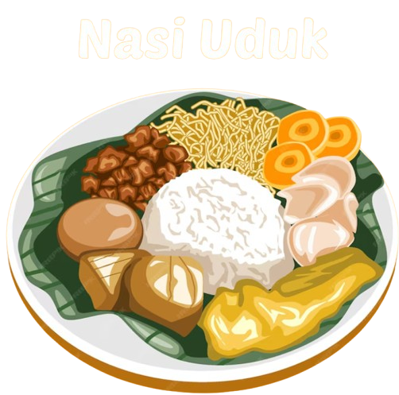

NASI UDUK
Nasi uduk adalah makanan khas suku Betawi yang terbuat dari nasi putih yang dikukus dengan santan dan dibumbui dengan berbagai rempah

Nasi uduk adalah makanan khas suku Betawi yang terbuat dari nasi putih yang dikukus dengan santan dan dibumbui dengan berbagai rempah